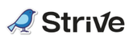
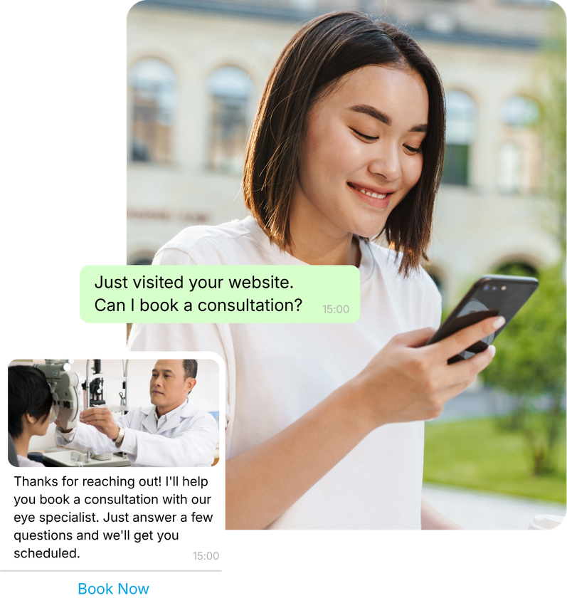
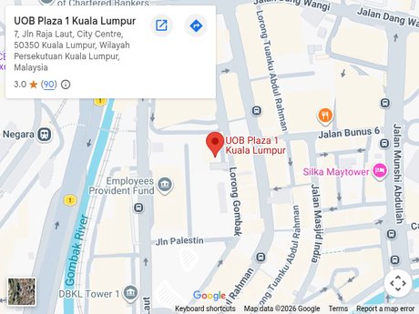
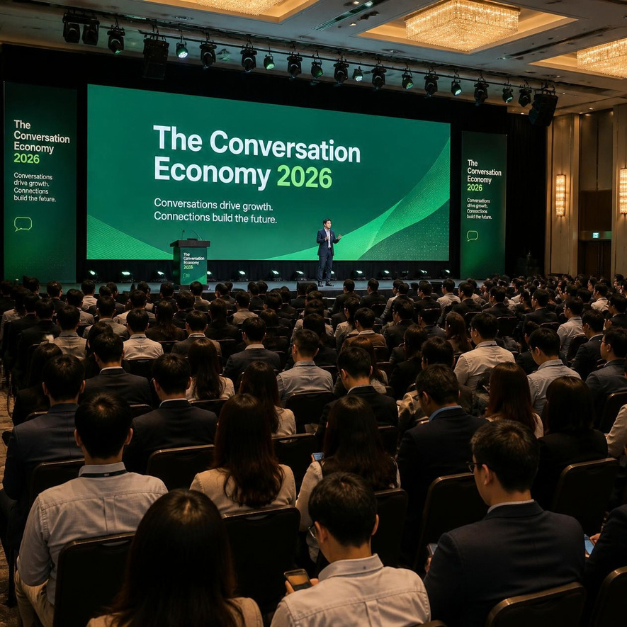

Business owners and founders
You’re running paid acquisition, enquiries land on WhatsApp, and messaging has become a cost line you can see. You want to know what to fix first.
The
2 0 2 6
Join industry leaders, innovators, and decision-makers for a conference packed with insights, networking, and practical strategies.
REGISTER NOWThe
Conversation
Economy 2026
Malaysia’s WhatsApp & AI Agent
Industry Forum
Conversation is becoming the way Malaysians buy.
Is your business built for it?
Join us to understand what conversational commerce is shaping into and what it takes to prepare for it. Get the insight from Meta, two former Meta leaders, and the brands already running WhatsApp at scale.
Convened by
Industry partners

The channel grew up.
Most businesses
haven’t caught up.
A few years ago, WhatsApp was where a customer asked a question. Not it’s where they compare, decide and buy.
What was once a messaging app, is becoming a commerce channel with a seamless infrastructure underneath it.
Don’t get left behind. Understand the impact of WhatsApp’s latest change in messaging charges, and equip your business with strategic and effective ways to use this powerful channel such as:

If conversation becomes the main way your customers buy, what does your business need to look like?
Built for the people who own the system, not the tool
You’re running paid acquisition, enquiries land on WhatsApp, and messaging has become a cost line you can see. You want to know what to fix first.
You own the funnel and the budget. You need to know where this channel is heading before you plan next year around it.
You carry the message volume. The shift hits you hardest, and you’re rarely invited to events like this.
What You’ll Leave With
Where conversational commerce is actually heading
The economics of messaging post-October pricing changes
How to design a conversation that converts in four messages instead of fifteen — the mechanics, not the principle
Where AI agents genuinely replace headcount, and where they cost you sales — including the failure nobody talks about
What the providers are building for 2027
Act one
2:00PM
Welcome + Opening
Keynote
Kick off the conference with opening insights on the future of business conversations
Ashley Ong, Superanium – 15 min
2:15PM
“The Conversation Economy”
Where this market is heading, what changed, and how the economics of a customer conversation have been rewritten.
Justin Murugaya, Superanium – 30 min
2:45PM
“What We’re Building Next”
New features, the roadmap, and Meta’s commitment to business AI.
Meta – 25 min
Act two
3:10PM
From Automation to AI
Agents: What WhatsApp API Can Do
Explore how automation, and AI agents are turning WhatsApp into a powerful engine for business growth.
Strive.Asia – 25 min
3:35PM
How Brand Use
WhatsApp API
How e-commerce brands turn a first message into a sale — what they built, what it cost, and what they’d do differently.
3 Brand Owners moderated by Justin – 45 min
Act three
4:20PM
Closing — “What Does
This Mean For You”
The practical session. How to design a conversation that converts in four messages instead of fifteen. Where AI agents genuinely replace headcount, and where they quietly damage conversion. What to build, fix and budget for in 2027.
Ashley Ong, Superanium – 35 min
4:55PM
Wrap Up + Networking
5:00 Executive Pass
Introductions to the speakers during the networking hour
Featured Speakers
What our students say
From our WhatsApp API workshops — the same team behind this forum.
We learned to identify roadblocks and understand how to use AI and automation to improve our process for higher conversion.
Shermaine TayCreative Director, Fitness
Superanium’s 1-day WhatsApp API session has empowered us to enhance our front-end flow for improved optimisation by utilising the WhatsApp API feature, as well as identifying the best ways to integrate it with our existing setup.
EmelliaCEO, Institute of Early Education
This session taught me exactly how to build and automate our entire communication flow from scratch. Knowing how to structure this automation ensures that no client request is missed, allowing us to deliver seamless service while maximising our booking conversions.
NashwinDeputy Chairman, Catering
Generating leads is meaningless if they don’t convert. After this workshop, I’ve learned exactly how to leverage the WhatsApp API to bridge that gap, ensuring no lead goes cold and our nurturing process is seamless.
Ashley LohDirector, POS Solutions & Enterprise Growth
This workshop helped me bridge the gap between lead generation and closing. I learned how to handle leads in a much more structured way, guiding conversations toward conversion. I’d recommend Ashley’s class to anyone who wants to use the WhatsApp API effectively.
Marcus LimCommercial Videographer & Certified Drone Pilot
I thought I knew my audience and funnel well until Ashley pointed out exactly why leads were dropping off mid-chat. Superanium showed us that successful sales don’t rely on luck; rather, they require a well-structured conversational flow within WhatsApp. Now we’re ready to scale our next lead gen campaign.
YuliadyStrategist, Beauty
RM 198 RM 98*
Early Bird until 9 November, then RM198 after
Reserve your seat nowRM 398
30 seats only; max 2 per company
WhatsApp to Purchase
Tuesday, 24 November 2026
2PM – 5PM
** We would encourage public transport. Bandaraya–UOB LRT Station is less than a five-minute walk from the venue. If you’re driving, park at the KWSP building next door.
No. Nothing is sold from the podium. The forum is to build awareness of what WhatsApp API can do and to help businesses prepare for what’s changing in 2027
Executive adds a 30-minute 1:1 conversion audit after the forum, reserved seating, introductions to the speakers, priority on panel questions, early access to the report, and 15% off any Superanium training. Capped at 30, by application, two per company.
Apply through the ticket page. We review against the room we’re building and come back within two working days. If it’s not a fit we’ll say so and point you to a Delegate seat.
The State of Conversation: Malaysia 2026 is a new benchmark of how Malaysian businesses use messaging. Every ticket includes a digital copy.
Unfortunately, this event is not HRD Corp claimable. However, we do offer other training programmes that are eligible for HRD Corp claims. Feel free to reach out to us if you’d like to explore the available programmes.
Yes, up to 48 hours before, to a colleague.
Yes, tickets can be transferred to another person once. However, tickets are non-refundable once purchased.
Take the 2-minute Conversation Maturity Index. If you score Level 3 or below, this forum is built for exactly that gap.
Take the Index →
Your customers are already having the conversation. The question is what happens on your side of it.
Get delegate pass WhatsApp for executive pass